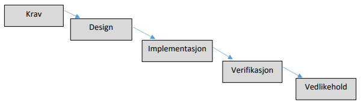

- intro
- kommunikasjon
- viktig med teknologi (god på programmering og andre verktøy)
- men like viktig er kommunikasjon
- består av spontan kommunikasjon og permanent dokumentasjon
- muntlig uformell kommunikasjon
- jobbe i samme rom fremmer kommunikasjon
- forskjellig etg. gir mindre kommunikasjon
- forskjellig bygg gir enda mindre kommunikasjon
- muntlig kommunikasjon på møter
- møter er egnet for større avgjørelser der alle får med seg kommunikasjonen
- "model stormin"
- skisserer modell på whiteboard og diskuterer
- skjer i spontane møter for å løse et problem kjapt
- kan lagres som en skisse
- "vanlig" modellering
- brukes for å permanent dokumentere omfattende og detaljert
- skrevet dokumentasjon
- skriver for alt som ikke kan modelleres
- beskriver visjon/krav/ferdige systemet
- nyttig for nye deltakere (beskrivelse av prosjektet)
- metodikk
- vannfallsmodellen - 1970
- vanligste utviklingsmetoden før
- egne team for hver fase med mye skriftlig dok. og lite muntlig kom.
- 
- all dok. ble ikke lest
- mange prosjekter ble store, tok lang tid, feilet
- vanskelig å gå tilbake under produksjon når ting ikke fungerte som planlagt
- unified process - 1999

- i UP er iterasjoner sentralt
- gjør ikke unna krav, analyse, design tidlig
- gjennomfører sykluser og gjør dette flere ganger (iterativt)
- evolusjonær eller inkrementell fordi man former/endrer kravene etter hvert som man erfarer i prosjektet
- iterasjonene ble innført for å addressere problemet med vannfallsmetoden
- å være i stand til å kunne endre krav
- i utviklingsmetoden "scrum" konkretiseres en iterasjon i form av en "sprint" med konkret leveranse for hver sprint
- UP har flere varianter
- I starten var modellering og dok. omfattende
- selv om iterasjoner ble innført, endte man med mye kravarbeid og design i starten
- ble derfor mindre dok. etter hvert
- på denne tiden var det klare skiller mellom roller, f.eks. arkitekt og utvikler
- arkitekter var "hjernene", utviklere var "code monkeys"
- med gode modeller og god dok., kunne man enkelt omrokere ansatte
- uformell kommunikasjon ble oversett, noe som differerer fra "agil utvikling"
- UP har fasene fra fossefall, men itererer dem over flere faser

- UML
- UP og UML går hånd i hånd
- begge er standarder vedlikeholdt av "object management group"
- i dokumentmalene for UP spesifiseres bruk av UML-diagrammer
- use-case-diagram, sekvens-diagram, domenemodell, klassediagram
- UP er utdatert, men UML er oppdatert
- Agile Manifesto - 2001
- da smidige (agile) metoder kom ble det applaudert
- utviklere gikk fra "code monkeys" til viktigere prosjektdeltakere/arkitekter
- "extreme programming" ble populært og prosjekter begynte å levere flere ferdige fungerende systemer
- gikk raskere å levere første utkast, som ga motivasjon
- paradigmeskifte i systemutvikling
- de fleste vil si de driver med smidig utvikling, selv om det i praksis varierer
- førte til fokus på teknologi og verktøy
- design og dokumentasjon ble glemt
- fungerte for enkle systemer, men ble problematisk med lite dok. i større systemer
- "refactoring" skulle i stor grad løse designproblemer, men ble vanskelig lenger ut i prosjektet
- ved tidspress på slutten blir "refactoring" nedprioritert, særlig dersom man har et fungerende system
- resultatet ble at systemet er vanskelig å vedlikeholde
- XP
- første smidige systemutviklingsmetoden
- ble beskrevet i en bok skrevet av Kent Beck i 1999
- nyskapende, og metoden inneholder prinsipper osm er gjeldende i dag, spesielt i Test-Driven Development
- ble populært blandt utviklere, men skepsis blandt de høyere opp i systemene
- nå skulle man nesten ikke dokumentere eller modellere
- her som i TDD er det "refactoring" som skal sikre at koden får godt design
- xp har 29 regler bl.a.:
- programmer ALLTID parvis
- lag alltid en enhetstest for det du skal lage FØR du skriver koden
- ha en kort feedback-loop, hyppige tester, og tilbakemeldinger fra kunde skal resultere i kontinuerlige endringer
- kjør ofte akseptansetester av større deler av systemet. disse lages fra user stories og bør være automatisert
- ha korte iterasjoner med leveranser i hver av dem
- ha fokus på enkel og tydelig kode. refaktorer med en gang koden begynner å lukte
- skriv aldri kode du tror kan bli kjekk senere. dette er i kontrast til up-front-modellering (UP) hvor man gjerne prøver å lage noe flott og generelt som gjør at utvidelser skal bli enklere
- parprogrammering er utmerket måte å utvikle kode på.
- kan hende sjefen din ikke synes dette er en god utnyttelse av ressurser, men er mange tilfeller hvor det er det
- utvikler felles plattform for hvordan man koder
- får tenkt gjennom problemstillinger man har oversett
- utfører "code review" kontinuerlig for å unngå bugs
- i mange prosjekter utføres "code review" før man merger inn i master
- TDD
- testdrevet utvikling er videreføring av xp
- mer generell og inneholder ikke de 29 reglene
- fokuset er det samme - tester driver utviklingen
- tester = krav
- user story beskriver funksjonalitet fra en brukers ståsted
- hvis man detaljerer en user story med gode scenarioer eller akseptansekriterier vil dette fungere som tekstbeskrivelse
- kan da gå gjennom scenariene manuelt ved en akseptansetest, men best å automatisere den
- finnes verktøy som bruker user story-er med scenarioer og lager automatiserte akseptansetester
- enhetstester fungerer på flere nivå
- setter krav til en klasse
- dokumenterer kravene
- brukes til å validere (teste) at klassen virker som den skal
- TDD er også iterativt

- test-first: skriver test før eller samtidig, aldri etter
- skriver kode etter testen (akkurat nok)
- har nå mulig til å forbedre design
- Scrum
- smidig prosess-metode som forteller om hvordan vi skal jobbe sammen og få god fremdrift i prosjektet
- omfatter prosessen, men ikke utvikling/modellering
- hovedpunkter:
- team på 7-8
- stand-up møter hver morgen (15 min)
- sprinter (iterasjoner på et par uker) med klare mål for hver leveranse
- teamet skal eksistere i beskyttet boble og kun ha kontakt med kunden via "product owner"
- teamet, inkludert "scrum master" er flatt organisert

- lean software development
- overføring av prinsipper fra lean manufacturing til software-utvikling
- "implementing lean software development"
- "eliminate waste" - forbedre effektivitet og kvalitet ved å eliminere overflødige elementer
- think big: forstå helheten
- act small: gjør litt av gangen
- fail fast: finn feil asap
- learn rapidly: lær av feil
- 7 prinsipper
- eliminate waste
- amplify learning (create knowledge)
- decide as late as possible (defer commitment)
- deliver as fast as possible (deliver fast)
- empower teams (respect people)
- build integrity in (build quality in)
- see the whole (optimise the whole)
- lean legger hovedvekt på å unngå å gjøre/lage ting uten verdi
- lean og agile handler om tilpasninggsdyktighet, kundesamarbeid, og teamwork